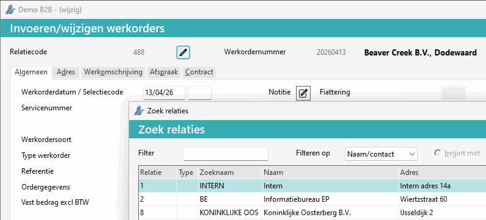
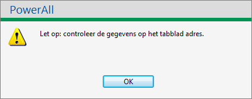
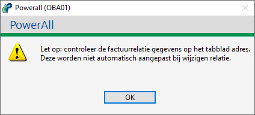
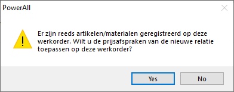
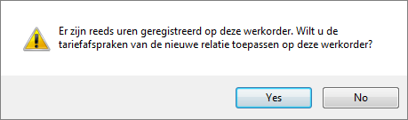
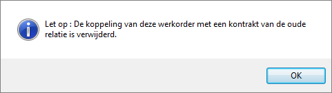
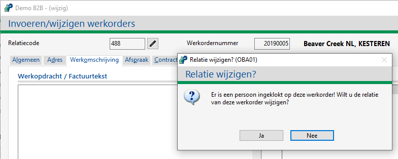

Het is mogelijk om bij een Offerte of Werkorder de relatiecode te wijzigen, als dit ingesteld is. Een verkeerd gekozen relatie kan hierdoor gemakkelijk gecorrigeerd worden.
Om het relatie van een werkorder te wijzigen, doorloopt u de volgende stappen:
Ga naar Selecteren werkorders (WS).
of
Ga naar Selecteren offertes (OS). Vanaf versie 3.30.
Selecteer de werkorder of offerte
Kies voor de knop Wijzigen.
Kies voor de pennetje-knop  .
.
De volgende pop-up melding verschijnt:
Wilt u de relatie van deze werkorder wijzigen?.
Kies voor de knop Ja.
Het scherm Zoek relaties verschijnt.

Geef de relatie in of selecteer deze.
Het wijzigen van de relatie naar een relatie met een andere BTW-code wordt niet ondersteund
Bij een werkorder kan één van onderstaande melding verschijnen:
Bij een contactpersoon:

Bij een factuurrelatie:

Bij artikelen met prijsafspraken:

Opmerking: De opgegeven prijzen blijven hetzelfde, alleen wordt een nieuw kortingspercentage of de nettoprijs afspraak toegepast (indien voor prijzen bijwerken ja gekozen wordt).
Bij uren:

Bij een contract:

De relatiecode is gewijzigd.
Controleer de adresgegevens, factuurrelatie / contactpersoon e.d. op tabblad Adres.
Kies voor de knop Einde order.
De gegevens zijn opgeslagen.
Bij het wijzigen van een relatie van een offerte of werkorder gelden de volgende restricties:
De relatie mag geen andere BTW-code hebben.
De werkorder mag niet:
aan een project gekoppeld zijn.
door de Werkbon App opgehaald zijn.
Belangrijk: Indien van toepassing wordt bij een werkorder bij prijsafspraken of tariefafspraken gevraagd of deze toegepast moeten worden op de al geregistreerde artikelen/materialen of uren.
Het factuuradres / afleveradres wijzigt.
Alleen de relatie-code wijzigt, alle gegevens blijven hetzelfde behalve:
De rayon-code (mailcode 4) van gewijzigde klant wordt toegepast.
Bij een contactpersoon, wordt deze leeg gemaakt.
Bij werkorder met contract gegevens, worden deze op 0 gesteld.
In de regels, mogelijke kortingen bij prijsafspraken als deze bijgewerkt worden, zie mogelijke meldingen hierboven.
Behalve de kortingen op de uren.
Bij een werkorder met een servicemelding:
wijzigt ook de relatiecode van de servicemelding.
Als er nog ingeklokt is bij Urenregistratie touchscreen op een werkorder verschijnt er de volgende melding:
Kies voor de knop Ja.

De werkorder waarop in geklokt is, wordt mee gewijzigd.
Als de factuurrelatie wijzigt, verschijnt er een melding:
De factuurrelatie voor deze werkorder is gewijzigd van <relatie-oud> naar <relatie-nieuw>. Wilt u de prijzen en kortingen en BTW-code ook bijwerken.
Copyright ©